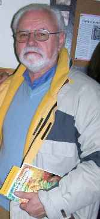

Con nosotros...
Antonio Cristóbal Pourrère (Argentina)
 LA CÍTARA
LA CÍTARA
Llegué justo un segundo antes que la puerta del subte se cerrara. A empellón limpio, de los pocos pasajeros que alcanzaron a entrar detrás de mí, quedé
apretujado e inmóvil en el interior del vagón.
No sé porqué en ese instante se me dio por pensar en Sofía.
Hacía años que todo estaba terminado, aunque en realidad nunca había comenzado.
Lo primero que regresó a mí memoria fue su risa. Seguro que si estuviera en la situación bochornosa de ese momento, por el calor y la
cercanía de los cuerpos, ella se estaría riendo sin tomarlo a la tremenda. Así era.
La conocí en el trabajo. Una mañana el contador nos reunió y dijo:
Luego Don Diego retornó a su despacho y aquella chica delgaducha, pero de buen físico, iluminó la oficina con una amplia sonrisa.
Nos tendió la mano a cada uno de nosotros y preguntó cual era su escritorio.
Todos nos miramos mientras “la nueva”, colocaba con sumo cuidado en el estante superior su “bagayo”.
Infinidad de cosas pasaron desde ese día. Sofía y yo teníamos tareas afines y además solíamos viajar juntos, ya que ella vivía en un barrio cercano al mío.
De esa forma fuimos conociéndonos y transformando una mera relación de trabajo, en amistad.
Siempre nos buscábamos. Siempre estábamos de acuerdo en cada palabra, en cada gesto.
En uno de aquellos viajes de vuelta, tomé coraje y decidí largarme y decirle lo que me estaba pasando.
Era viernes, y así podríamos vernos sábado o domingo si la propuesta era aceptada.
Los dos nos callamos. De allí en más el viaje fue casi interminable. Al llegar a su estación me dio un beso como cada tarde, y se alejó entre la muchedumbre con el amado
bolso en sus espaldas.
Pasé el fin de semana arreglando pequeñeces en la casa. No podía dejar de pensar en Sofía. Por fin llegó el lunes.
Al entrar en la oficina vi que el escritorio de mi amiga estaba vacío.
Fui hasta el mueble y al abrirlo me encontré con su bolso y un sobre cerrado a mí nombre.
Rompí la solapa y extraje la nota, prolijamente doblada en dos. Me puse a leer.
“Querido amigo:
También te amo. Cuan dificultoso resulta decirte que nada puedo hacer.
Te dejo como prenda de lo que siento, este bolso y su contenido que me han acompañado durante muchos años.
Créeme, es como si me tuvieras a mí. Te abraza. Sofi.
Corrí el cierre de aquel bolso misterioso, y al mirar dentro apareció un instrumento musical de madera.
Era una cítara de gran belleza. Lo retiré y pude observar que en uno de sus costados estaba grabado el nombre de Sofía.
Había también una caja sin tapa llena de programas.
Estaba su foto, más joven, y en cada uno las distintas actuaciones que había realizado en un periplo por la India.
Mí amada amiga resultaba ser una intérprete de este primo hermano del laúd, al que según lo que podía adivinar, ejecutó
por distintas ciudades de aquel antiguo país, donde está reconocido como solista dominante de su música clásica. Anonadado
y ensimismado por toda esta revelación, no escuché que me llamaban.
Salí corriendo no sabía ni a donde tenía que ir. La remisería que trabajaba con nosotros estaba en la esquina. Entré llevándome todo por delante.
Las escaleras en la entrada del hospital estaban abarrotadas de gente que esperaba turno. Pasé entre todas ellas a los empujones.
No oía las protestas ni los insultos que me echaban. Quería llegar a la guardia.
La mujer me miró. Me hizo una seña para que me sentara y esperara un momento.
Al ratito apareció un médico. Se sentó a mi lado y preguntó:
La agonía de Sofi duró casi una semana. Yo estuve allí todo el tiempo. Otro hombre venía día por medio, pedía informes, se quedaba una hora y se iba.
Luego me enteré que era la pareja. No había otra familia. Una sola vez me dejaron pasar.
Estaba en coma, y seguramente me hicieron el favor, ya que falleció a las pocas horas.
Nunca supe donde la velaron, ni quien retiró el cuerpo. Tampoco sé dónde está enterrada.
Un sacudón del tren me trajo nuevamente a la realidad. El apretujamiento era a estas alturas insoportable, una mujer que tenía al lado
comentó no muy amablemente:
Algunos anteriores
APENAS CON EL ALMA
Enorme es el rodeo que nos deja la calma.
Reconocer la meta preparada,
trasladar la esperanza sin nombre conocido.
Una barcaza quieta
que se aplasta a la arena
con un dejo amarillo de tibieza.
Tengo ajadas las manos
de acariciar silencios.
La mirada recortada en el tiempo,
allí, detrás..., la juventud eterna
de haber creído cielos.
Orquídeas y esmeraldas, un deseo,
solo pétalos sueltos del pasado,
un reflejo de nubes.
Hoy sé que todo está,
transita y se transforma.
Caminos sugeridos...,
recorridos apenas con el alma.
Antonio Cristóbal Pourrère nació en San Isidro y actualmente vivo en San Fernando, en la Provincia de Buenos Aires, Argentina. Cuenta actualmente con 62 años y se ha dedicado a escribir desde los 16, aunque lo hizo en forma muy personal, para sí y algunos amigos fundamentales. Con el tiempo otras personas fueron conociendo sus escritos y animándolo, junto a los amigos, a que concursara al menos, si no quería publicar, que concretó después de mucha insistencia y consiguió así meritorios logros. En los últimos 12 años se presentó en 70 concursos, cosechando algo más de 40 premios de toda índole. “Aunque tengo preparados cuatro libros de poemas y uno de cuentos, allí están, tranquilos en la biblioteca, ya que no concuerdo con las metodologías actuales de las editoriales, y además y fundamentalmente, no creo que sirva de nada agregar un ejemplar más a los anaqueles de las librerías o de las casas de quienes pudieran querer conservarlos. Sí me han publicado en cuatro antologías. En cambio, me encanta compartir con gente que como yo, gusta de la poesía, y crea blogs donde pone su esfuerzo y ahínco para interconectar poetas. Este es el caso de “Vida Reflexion”, a la que accedí, y en la cual me encontré con bellas creaciones literarias. Actualmente participo de lugares en Internet tales como: La Página de Carmen Castejón (España); el blog de Gustavo Tissocco: Mis poetas Contemporáneos; IFLAC Argentina; revista Almiar; y algunas otras colaboraciones. He dirigido algún taller literario, y he sido jurado alguna vez en eventos de poesía.” |
 |
|---|